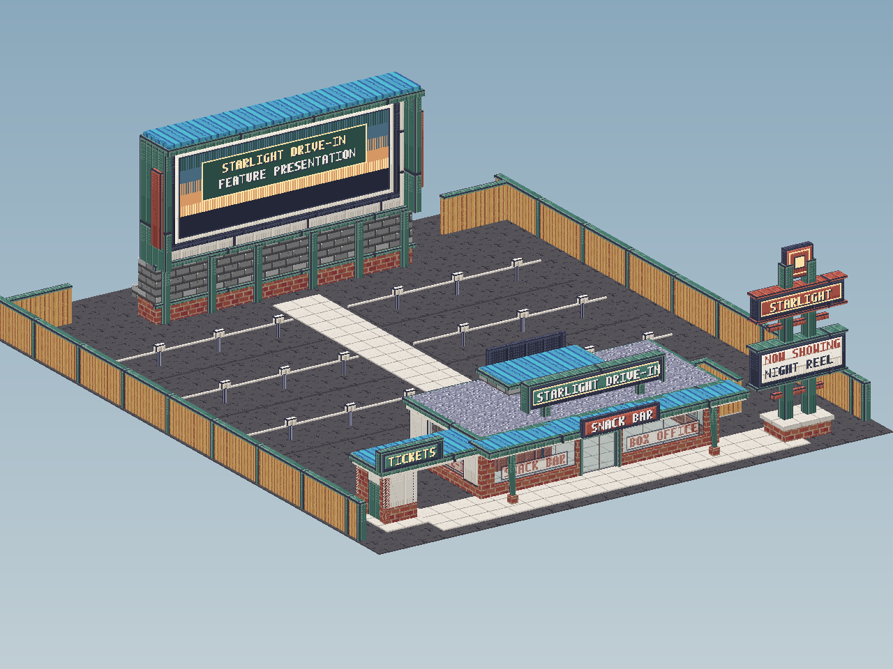
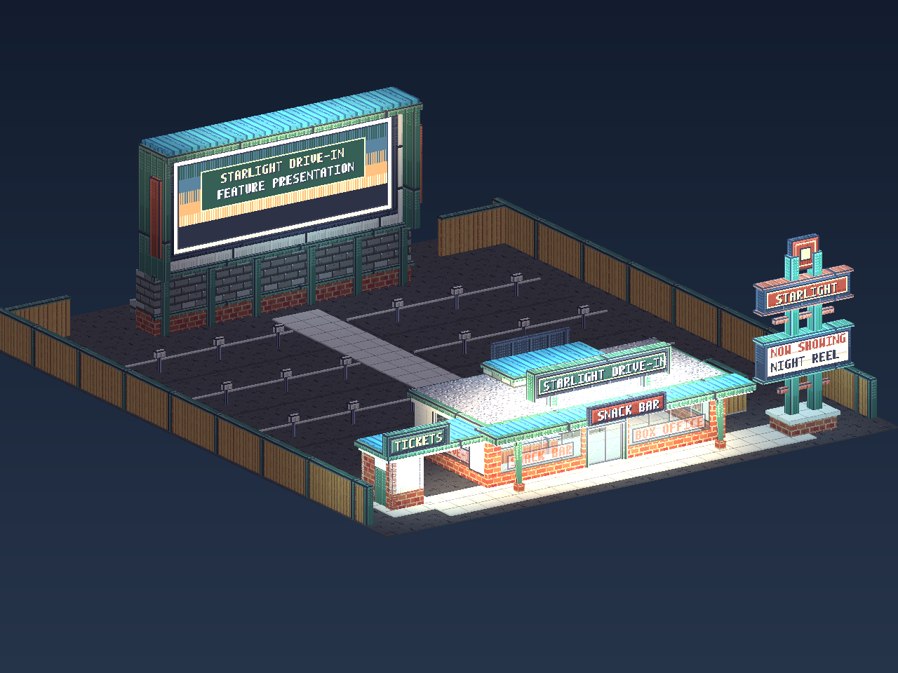
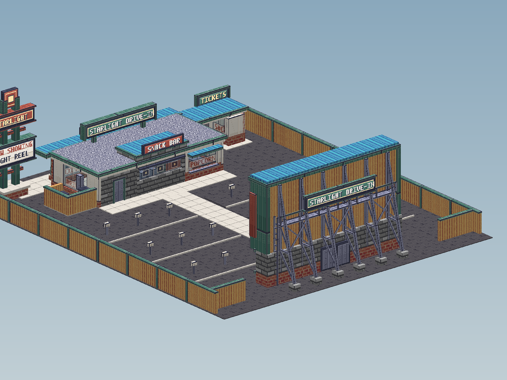
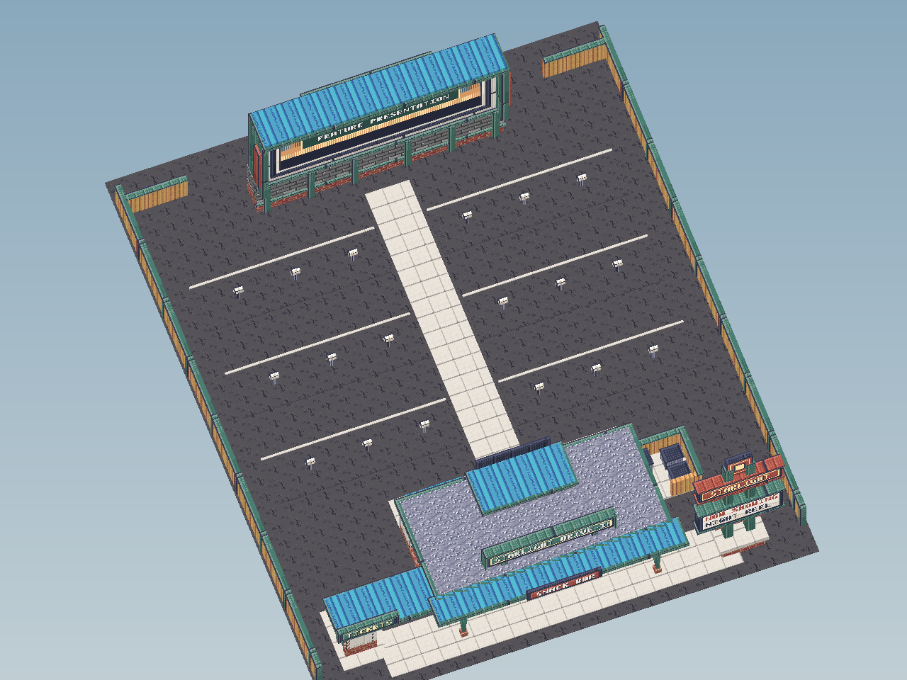
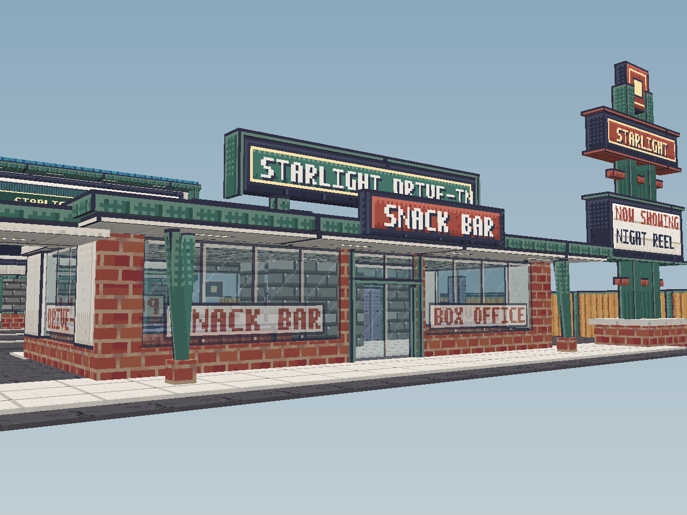
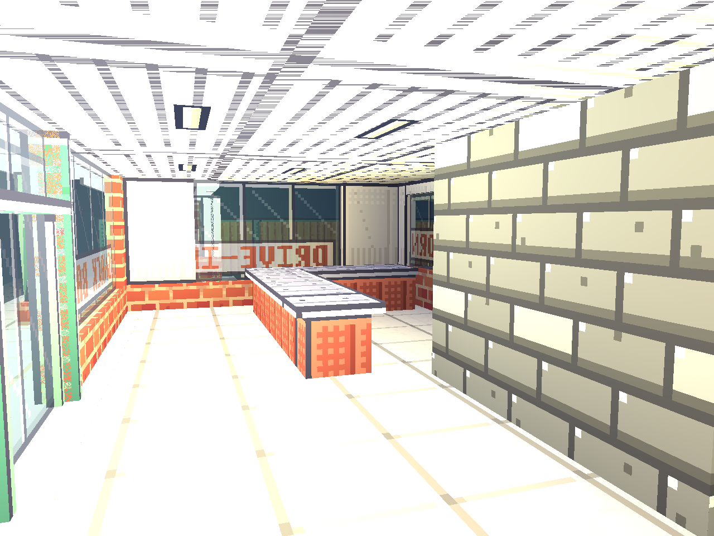
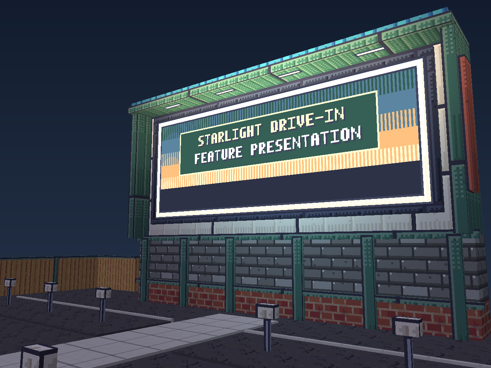

Starlight Drive-In
An original 1950s Googie drive-in movie theater for Timerpg: cantilevered concession and optical projection pavilion, drive-through ticket booth, monumental widescreen tower with six rear steel A-frame wind trusses and maintenance catwalk, three tiered viewing berm ramps with 18 dual-speaker stanchion posts, and a double-sided roadside neon marquee pylon. Built to the LANDMARKS_GLB contract using shared LimeZu atlas swatches and original 2x2-texel pixel art at 0.0388 m/texel.

01. Daylight Front — Googie Concession Pavilion, Ticket Kiosk, Marquee Pylon & Screen Tower
02. Blue Hour — Illuminated Neon Signage, Soffit Light Pools & Feature Presentation Screen
03. Rear 360° — 6 Steel A-Frame Raker Trusses, Catwalk, Projection Ports & Service Yard
04. Plan / Above — 34.76 x 42.21 m Lot, 3 Tiered Viewing Ramps & 18 Dual-Speaker Posts
05. Street Person-Height (1.75 m) — Storefront Glazing, Rooftop Neon & Pylon Scale
06. Interior Shell — Terrazzo Lobby, Fixed L-Counter, Ceiling Lamps & Projection Booth
07. Screen Tower Close-Up — 192x72 Art-Pixel Widescreen Frame & Acoustic Baffle Hood